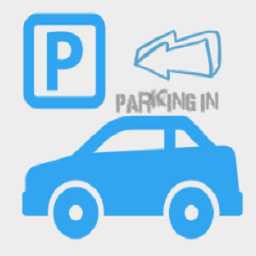
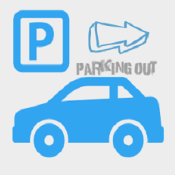

<ion-header>
  <ion-toolbar color="primary">
    <ion-buttons slot="start">
      <ion-menu-button></ion-menu-button>
    </ion-buttons>
    <ion-title>
      Registro uso parqueadero
    </ion-title>
  </ion-toolbar>
</ion-header>

<ion-content>
  <br>
  <fieldset>
    <ion-item-sliding #parkSlidingItem>
      <ion-item>
        <ion-thumbnail slot="start">
          
        </ion-thumbnail>
        <ion-label>Registrar Parqueo</ion-label>
      </ion-item>
      <ion-item-options side="end" (click)="TakeSpot(parkSlidingItem)">
        <ion-item-option color="primary">
          <ion-label>Parquear!</ion-label>
        </ion-item-option>
      </ion-item-options>
    </ion-item-sliding>
  </fieldset>
  <br>
  <fieldset>
    <ion-item-sliding #breakFreeSpotSlidingItem>
      <ion-item>
        <ion-thumbnail slot="start">
          
        </ion-thumbnail>
        <ion-label>Liberar Parqueadero</ion-label>
      </ion-item>
      <ion-item-options side="end" (click)="BreakFreeSpot(breakFreeSpotSlidingItem)">
        <ion-item-option color="primary">
          <ion-label>Liberar!</ion-label>
        </ion-item-option>
      </ion-item-options>
    </ion-item-sliding>
  </fieldset>
  <br>
  <fieldset>
    <ion-item-sliding>
      <ion-item-options side="start">
        <ion-item-option>
          <ion-label>Disponibles</ion-label>
          <ion-badge color="success" slot="end">
            {{usagesParking.Free}}
          </ion-badge>
        </ion-item-option>
      </ion-item-options>

      <ion-item tooltip="Gire a la derecha o izquierda para ver la disponibilidad" positionV="top">
        <ion-thumbnail slot="start">
          
        </ion-thumbnail>
        <ion-label>Ver Disponibilidad</ion-label>
      </ion-item>

      <ion-item-options side="end">
        <ion-item-option color="danger">
          <ion-label>Ocupados</ion-label>
          <ion-badge color="light" slot="end">
            {{usagesParking.Used}}
          </ion-badge>
        </ion-item-option>
      </ion-item-options>
    </ion-item-sliding>
  </fieldset>
  <br>
  <fieldset style="background-color: blue">
    <ion-grid fixed>
      <div *ngFor="let itemArray of spliceBranch">
        <ion-row class="parkingRow">
          <div *ngFor="let itemSubArray of itemArray">
            <ion-col size="2" (click)="GetUsedBy(itemSubArray)"
              [ngClass]="itemSubArray.IsUsed? 'rowAvailabilityUsed' : 'rowAvailabilityFree'">
              {{itemSubArray.ParkingNumber}}
            </ion-col>
            <ion-col size="1"> </ion-col>
          </div>
        </ion-row>
        <ion-row style="margin-left: 20px">
          <ion-col size="12"> </ion-col>
        </ion-row>
      </div>
    </ion-grid>
  </fieldset>
</ion-content>